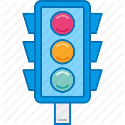

Crash Model
The most dangerous traffic signals based on the number of pedestrian and bike crashes.
Legend
|  | Traffic Signal |
| Bike Crash | |
|
|
Pedestrian Crash |
|
|
Num Crashes within 0.2km (radius = num) |
Instructions
Use the mouse and scroll wheel to navigate the map. Double click on a cluster to zoom into it. Single click on cluster to see makers within it.